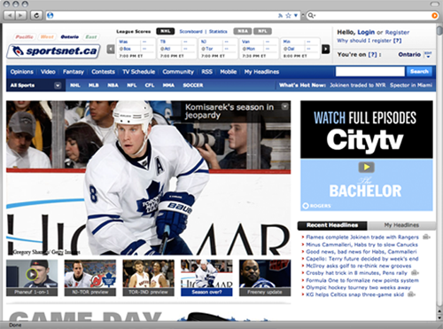
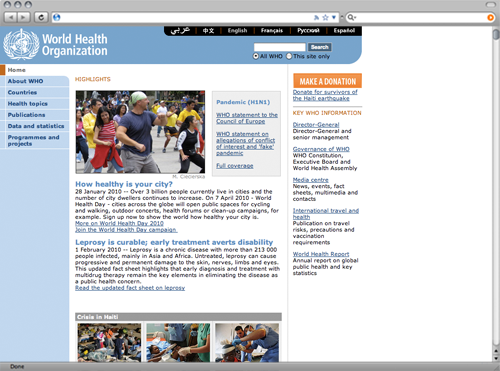
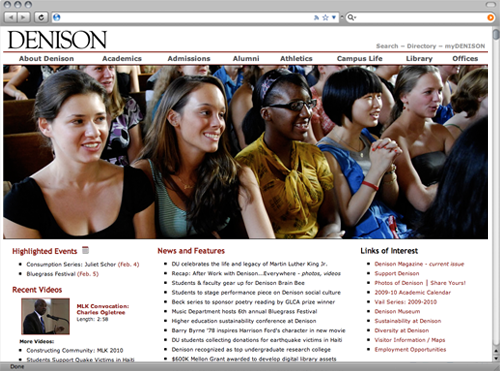
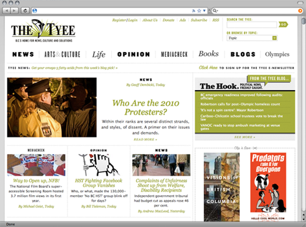
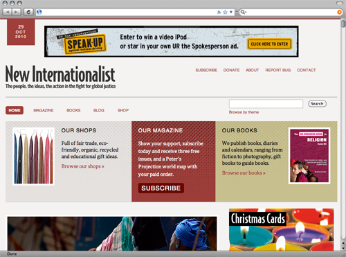
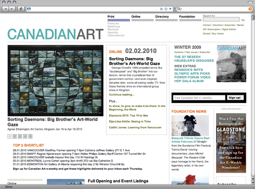
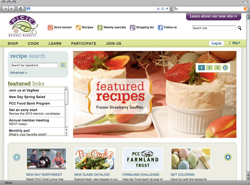

Showcase -- Sites that use Bricolage
Bricolage was developed for sites with complex and challenging requirements, from daily news properties like Rogers Sportnet to sites like the World Health Organization, which manages vast libraries of content in several languages. Bricolage is a powerhouse of flexibility, used by publishers that require a stable platform for managing content across sites, mediums, and changing technology landscapes.
Here are just a few examples of the types of publishers that are using Bricolage today:
Daily news portal: Sportsnet

More than 100,000 stories managed by Bricolage, including 4,500 versions of the home page, plus several thousand versions of each of the section home pages.
www.sportsnet.ca
Large multi-lingual property: World Health Organization

Simultaneous publishing in Arabic, Chinese, English, French, Russian, and Spanish.
www.who.int
Education & higher learning: Denison University
Bricolage is powering the Denison University web site, plus department and office web sites.
www.denison.edu
Daily online news site: The Tyee

Bricolage manages the content and editorial workflow, and Drupal manages the interactivity. Great example of how Bricolage integrates with other systems.
www.thetyee.ca
Print magazine: New Internationalist
New Internationalist (NI) workers’ co-operative exists to report on issues of world poverty and inequality; to focus attention on the unjust relationship between the powerful and the powerless worldwide; to debate and campaign for the radical changes necessary to meet the basic needs of all; and to bring to life the people, the ideas and the action in the fight for global justice. Bricolage powers the New Internationalist magazine site and blog network.
www.newint.org/
Print magazine: Canadian Art magazine
Quarterly print publication with more than 6,000 articles managed by Bricolage.
www.canadianart.ca
Organizational Web site: PCC Natural Markets
With over 45,000 members, PCC Natural Markets
is the largest consumer-owned natural food cooperative in the United
States. Bricolage manages over 2,000 pages, as well as RSS feeds, job
postings and event listings.
www.pccnaturalmarkets.com/
And there are many more site listed on the Bricolage Wiki at GitHub.
Would you like to add a site to the Showcase? Please send an e-mail to the-oc@bricolage.cc.